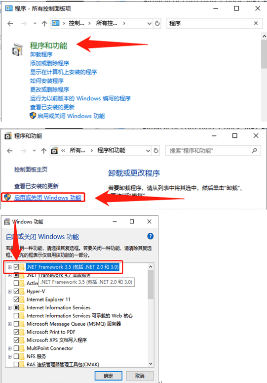
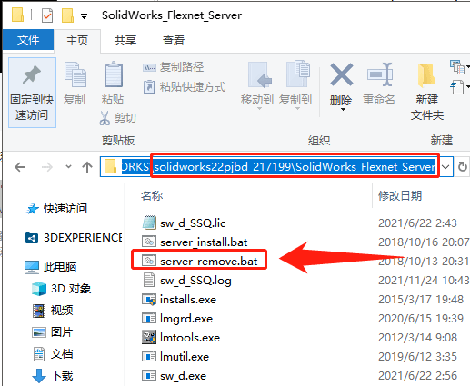
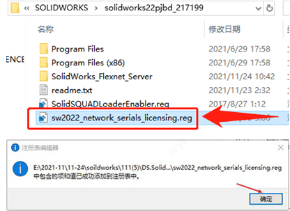
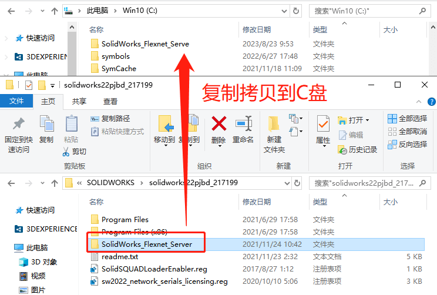
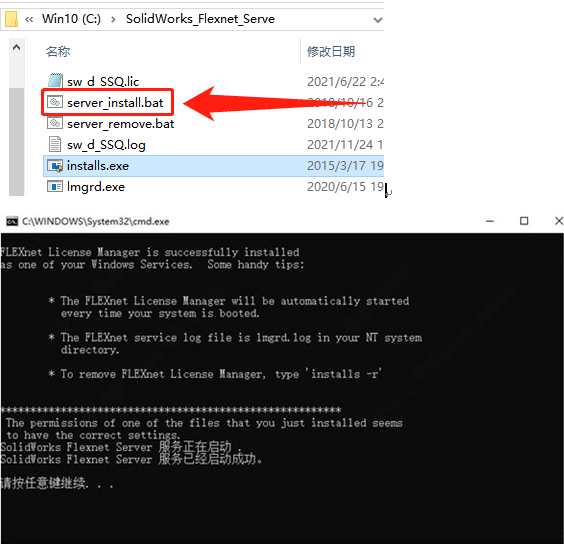

破解操作
2018 版本之后的破解方法是用网络版模式的破解，操作上有区别与之前的方式。
破解前准备：
环境检查
安装前，请关闭 Windows 外网、防火墙或电源线插头。检查.net Framework 3.5 和 4.0 是否已经安装。
如果未安装，请转到【控制面板】-【程序和功能】-【启用或关闭 Windows 功能】勾选.NET Framework 3.5(包括 2.0)
SW20 版注意
如果存在 SolidWorks_Flexnet_Server 请从 SW2020 SSQ 版本中卸载!
要做到这一点，运行管理员 SolidWorks_Flexnet_Server\server_remove.bat 并等待”SolidWorks Flexnet Server”服务被删除
然后从计算机中删除 SolidWorks_Flexnet_Server 文件夹。（一般文件夹会在 C 盘）
安装
注册序列号
1. “sw2022_network_serials_licensing 运行。并确认添加信息到 Windows 注册表
破解服务器
2. 将文件夹”SolidWorks_Flexnet_Server”拷贝到 C:目录下，
以管理员身份运行”SolidWorks_Flexnet_Server\server_install.bat”并等待新的服务，安装并启动”SolidWorks Flexnet Server”
安装程序
（这一步可以参考：#软件安装操作）
3.安装 SolidWorks 不要安装 SolidNetwork 许可证服务器(SNL)!当被问及许可证服务器定义输入:25734@localhost
3.1 如果弹出”系统检查警告”窗口，请忽略它(单击”下一步”继续)。
3.2 如果出现”SolidWorks 序列号未在激活数据库中找到”的警告出现，忽略它(单击 OK 继续)
3.3 如果不显示要安装的软件产品的完整列表， 点击”选择不同的包”并勾选选项”选择不包含在此包装中的产品”
3.4 选择需要安装的软件产品
3.5 如果”安装管理器无法确定当前订阅。过期日期。您是否要重新激活您的许可证以更新此信息?”出现时，按 No，然后在”Do you want Do it later?”提示中按 Yes。
破解
4. 安装结束后，覆盖原始 SolidWorks 程序文件夹中的破解文件。要从”Program Files\SOLIDWORKS Corp”中替换的文件夹(默认设置):
1 | C:\\Program Files\\SOLIDWORKS Corp\\eDrawings |
要从"Program Files (x86)"中替换的文件夹(默认设置):
1 | C:\\Program Files (x86)\\SOLIDWORKS PDM |
5. “SolidSQUADLoaderEnabler 运行。并确认添加信息进入 Windows 注册表
6. 重启电脑!
7. 运行 SolidWorks -帮助-SolidNetWork 许可证管理器许可订单。使用”上移”和”下移”按钮来定位高级产品，同一名称高于专业和标准产品，点击”应用”保存设置。单击”确定”关闭 SolidNetWork 许可证管理器
注意:
由于 SW2019 网络许可破解使用了与之前(SW2010-2018)不同的序列号版本。
那么如果您将 SW2021 与 SW2010-2018 安装在同一台计算机上，则需要:对于 SW2017-2018，通过运行相应的 SSQ 的 SW2017-2018 Activator 来重新激活它们，选择合适的软件版本，点击”激活许可证”
对于 SW2010-2016，则替换原来的 SolidWorks2010-2016 程序文件夹(如果存在)中的破解文件。
1 | C:\\Program Files\\SOLIDWORKS Corp\\eDrawings |
要从"Program Files (x86)"中替换的文件夹(默认设置):
1 | C:\\Program Files (x86)\\SOLIDWORKS PDM |